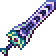

About the Zenith
The Zenith is the most powerfull weapon in terraria, known for its extremely high damage, attack speed, and range. However, its even more well known for being extremely long and complex to craft, requiring swords from all across the games progression. Its known as one of the hardest items to craft in all of gaming. You can get it after defeating the final boss, Moonlord. Although you often have to beat him mutliple times to get all the drops you need for the Zenith.
This page shows all the swords reqiured to make the Zenith, from the the copper short sword, the first weapon in the game, to the all mighty Terrablade.

Weapons reqiured:
{% block main %}{% endblock %}
Images and infomation comes from the offical terraria wiki: terraria.wiki.gg